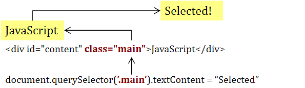
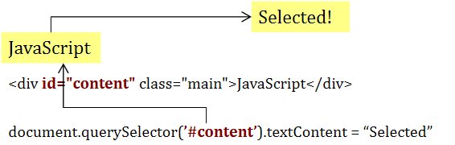
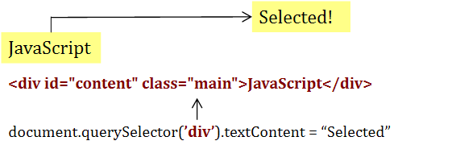
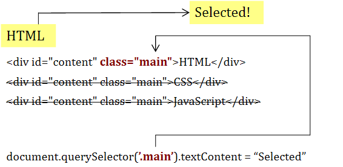
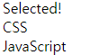
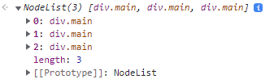
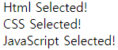

[List]
#1 document.querySelelctor
#2 document.querySelectorAll
? 개인적인 공부 내용을 기록하는 용도로 작성한 글 이기에 잘못된 내용을 포함하고 있을 수 있으며, 지속적으로 수정해 나갈 예정입니다.
#1. document.querySelector
document.querySelector는 HTML의 Element에 접근할 수 있도록 도와주는 window.document에 정의된 메서드입니다.
괄호 안의 따옴표(' ')안에 접근하고자 하는 Element의 Selector(선택자)를 넣습니다.
class에 접근하고자 한다면 클래스 이름 앞에 dot(.)을 붙여 .className 같은 형식으로 작성하며,
id에 접근하고자 한다면 아이디 이름 앞에 #을 붙여 #idName 과 같은 형식으로 작성합니다.
혹은 Element 그 자체를 선택하고자 한다면 Element의 이름을 넣어 주면 됩니다.
→ querySelector with class
<!DOCTYPE html>
<html>
<head>
<link rel="stylesheet" href="style.css" />
</head>
<body>
<div id="content" class="main">JavaScript</div>
</body>
<script src="script.js"></script>
</html>document.querySelector('.main').textContent = "Selected!";
main class를 querySelector로 접근하여 해당 element의 textContent를 JavaScript에서 Selected! 로 변경하는 예시입니다.
→ querySelector with id
document.querySelector('#content').textContent = "Selected!";
content id를 querySelector로 접근하여 해당 element의 textContent를 Selected!로 변경하는 예시입니다.
→ querySelector with Element
document.querySelector('div').textContent = "Selected!";
querySelector로 div 테그에 직접 접근하여 해당 element의 textContent를 Selected!로 변경하는 예시입니다.
세 가지 방식 모두 접근하는 document.querySelector를 이용해 element에 접근합니다. 이는 방식의 차이일 뿐 결과는 모두 동일합니다.
#2. document.querySelectorAll
document.querySelector 메서드를 이용해 HTML의 Element에 접근하는 방법에 대해 알아 보았습니다.
그러나 다음과 같이 class의 이름이 중복되는 요소가 3가지 존재 하는 상황을 가정해 봅시다.
(* id값은 고유한 값 이기에 중복될 수 없습니다.)
<!DOCTYPE html>
<html>
<head>
<link rel="stylesheet" href="style.css" />
</head>
<body>
<div class="main">HTML</div>
<div class="main">CSS</div>
<div class="main">JavaScript</div>
</body>
<script src="script.js"></script>
</html>
만약 앞서 배운 querySelector를 이용해 main class에 접근해 요소의 text를 바꾸려고 시도하면,
document.querySelector('.main').textContent = "Selected!";
다음과 같이 가장 첫 번째 요소 <div class="main">HTML</div> 만 적용 되고 나머지 요소들은 무시 되는 것을 확인할 수 있습니다.
 
이처럼 document.querySelector 메서드는 중복된 class에 접근을 시도하는 경우 가장 첫 번째 요소를 제외하고 나머지 요소는 모두 무시하는 한계가 존재합니다.
이러한 문제점을 해결하기 위한 document.querySelectorAll 메서드가 존재합니다.
document.querySelectorAll 메서드를 이용하면 중복된 이름의 class를 여러 개 선택할 수 있습니다.
document.querySelectorAll 메서드로 class명이 main인 element에 접근을 시도하면 다음과 같이 nodeList를 반환합니다.
document.querySelectorAll('.main');
반환된 nodeList를 따로 변수에 담아놓고, 그 변수에 저장된 nodeList를 활용하면 개별의 element에 접근할 수 있습니다.
const nl = document.querySelectorAll('.main');
nl[0].textContent = "Html Selected!";
nl[1].textContent = "CSS Selected!";
nl[2].textContent = "JavaScript Selected!";
querySelector 메서드를 이용해 HTML element 요소에 접근하는 방법에 대해 알아 보았습니다.
이어지는 포스팅에서는 querySelector 메서드를 이용해 CSS property에 접근하는 방식에 대해 정리할 예정입니다.
도움이 되셨다면 하단의 공감❤ 부탁드립니다!